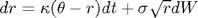
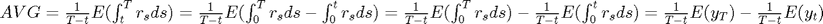
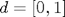
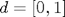

cfaffineEx
Returns the extended characteristic function evaluation of a parameterized Affine Jump-Diffusion (AJD) process. Part of the CFH Toolbox.
Syntax
W = CFAFFINEEX(U,V,X0,TAU,K0,K1,H0,H1,R0,R1) W = CFAFFINEEX(U,V,X0,TAU,K0,K1,H0,H1,R0,R1,L0,L1,jump,gradJump) W = CFAFFINEEX(U,V,X0,TAU,K0,K1,H0,H1,R0,R1,L0,L1,jump,gradJump,ND)
See theory for a description of the coefficient matrices K0,K1,H0,H1,R0,R1,L0,L1. You may leave any unused coefficient empty [], e.g. CFAFFINEEX(U,V,X0,TAU,K0,[],H0,[],R0) describes a system with constant interest rate, drift and variance, whereas CFAFFINEEX(U,V,X0,TAU,K0,K1,[],H1,[],R1,[],L1,jump) describes a system with state dependent drift, variance, interest rate and jump intensity.
For real argument U, cfaffineEx returns the characteristic function of the stochastic process. For complex arugment U=-v*i, cfaffineEx returns the moment generating function of the stochastic process.
[W alpha beta A B] = CFAFFINEEX(U,V,X0,TAU,K0,K1,H0,H1,R0,R1,L0,L1,jump,ND)
Returns the parameters  as well as and that solve the Ricatti equations. See Theory for details.
as well as and that solve the Ricatti equations. See Theory for details.
Input Arguments
By default, cfaffineEx expects U to be an array of dimension (K)x(1) or (1)x(K). If U is a (NX)x(K) array, set ND=1, if U is a (K)x(NX) array, set ND=2.
Contents
Example 1: Expected interest rate level
If we set , we can obtain arbitrary (discounted) expectations of linear combinations of by appropriate choice of . For example, say we want to compute the average short rate over a future time period. The short rate is assumed to follow a CIR process. Further, we introduce
The augmented state space is then

We are interested in

This expectation corresponds to
The last two expectations are evaluations of the extended transform of an augmented state space, setting .
Let us compute the average expectation
kR = 2.2; tR = 0.08; sR = 0.10; r0 = 0.04; y0 = 0; x0 = [r0 y0]';
Translating our problem into extended AJD coefficients, we obtain
K0 = [kR*tR 0]'; K1 = [-kR 0 ; 1 0]; H0 = zeros(2); H1 = zeros(2,2,2); H1(1,1,1) = sR^2; v = [0 1]'; T = 2; t = 0.5; E1 = 1/(T-t)*cfaffineEx([0 0]',v,x0,T,K0,K1,H0,H1,[],[],[],[],[],[],1); E2 = 1/(T-t)*cfaffineEx([0 0]',v,x0,t,K0,K1,H0,H1,[],[],[],[],[],[],1); AVG1 = E1-E2;
Let us compare this result against a simulation of the same process:
nSim = 100000; nSteps = 5000; dt = T/nSteps; xx = r0*ones(nSim,1); yy = y0*ones(nSim,1); for k = 1:nSteps; xx = xx + kR*(tR-xx)*dt + sR*sqrt(dt)*xx.*randn(nSim,1); if k*dt>t yy = yy + xx*dt; end end AVG2 = mean(yy/(T-t));
We find that the results are nearly identical:
[AVG1 AVG2]
ans =
0.076114 0.076106
Example 2: Asian options
Using the extended transform and its inverse, we can price Asian options as well. Say that we want to price an option that pays
in the future. The (discounted) risk neutral expectation of the payoff is
by the definition of the discount factor. This expectation can be further split into
At a closer inspection we find that the first conditional expectation is
whereas the second integral is
From the theory we know that both expectations can be recovered via their corresponding inverse Fourier transforms. All that is needed are the characteristic function and the extended characteristic function. Let us set them up now:
cf = @(u) cfaffine([0 1]'*u,x0,T,K0,K1,H0,H1,[],[1 0]',[],[],[],1); cfEx = @(u) cfaffineEx([0 1]'*u,[0 1]',x0,T,K0,K1,H0,H1,[],[1 0]',[],[],[],[],1);
Here we have done the following: The first argument of cfaffine results in an (NX)x(NU) array of inputs. By setting ND=1, we tell the function that it should operate on U column-wise. We do the same for cfaffineEx. This setting directly implements the choice in  . The same holds for . The choice of in cfaffineEx sets the coefficient  in the extended expectation .
. The same holds for . The choice of in cfaffineEx sets the coefficient  in the extended expectation .
We set the strike to 3.5%, the option pays the positive difference between the average interest rate over the next two years and 3.5%.
X = 0.035;
Finally, we can combine the corresponding expectations and obtain a price
e1 = 1/T*cf2gaby(cfEx,0,-1,-X*T,struct('uMax',500)); e2 = X*cf2gaby(cf,0,-1,-X*T,struct('uMax',500)); price = e1-e2;
Let us compare this result against a simulation of the same option:
xx = r0*ones(nSim,1); yy = y0*ones(nSim,1); for k = 1:nSteps; xx = xx + kR*(tR-xx)*dt + sR*sqrt(dt)*xx.*randn(nSim,1); yy = yy + xx*dt; end df = exp(-yy); e1sim = mean(yy/T.*(yy/T>X).*df); e2sim = X*mean((yy/T>X).*df); priceSim = e1sim-e2sim;
Again, we find that the results are nearly identical:
[price priceSim]
ans =
0.031173 0.031253